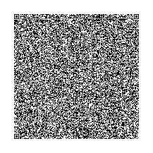

UPSOAR is a browser game that fits on a single QR code. To play, just scan the QR code below, copy the text, then paste it into a web browser's address bar. It will probably be fussy! Try getting a perfect focus and adjusting your zoom or lighting.
Alternatively, skip the gimmick and just play here.
Yet another method of playing is by pasting the URL below into a web browser's address bar. You can even bookmark it if you want to be able to play offline.
{{ site.data.report.dataURL }}
There's just 1 control: press to go up, release to go down. You can touch the screen, click the mouse, or press a key on the keyboard. The rest is up to you! Can you get to the top?